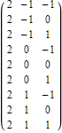
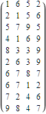
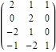
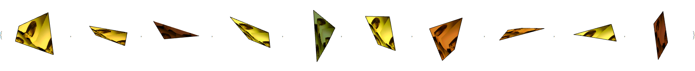
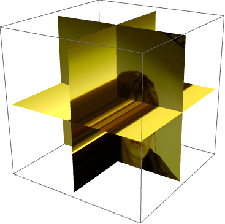

空间四边形
{% raw %}sampleImage = image;pointPositionFront = Insert[#, 2, 1] & /@ (Tuples[Range[-1, 1], {2}])
{% raw %}pointPositionAll =
Table[pointPositionFront.RotationMatrix[-90 i Degree, {0, 0,
1}], {i, 0, 3}];number := RandomInteger[{1, 9}, {4}]numbers = Table[number, {10}]
{% raw %}line = Table[pointPositionAll[[i]][[number[[i]]]], {i, 4}]
{% raw %}Table[Graphics3D[{Texture[sampleImage],
Polygon[lines[[i]],
VertexTextureCoordinates -> Normalize /@ line]},
Boxed -> False], {i, 10}]
{% raw %}data = Table[{r, g, b}, {r, 0, 1, 1/20}, {g, 0, 1, 1/20}, {b, 0, 1,
1/20}];data = sampleImage;Graphics3D[{Texture[data], EdgeForm[],
Table[With[{pts =
RotateRight[#, k] & /@ {{1/2, 0, 0}, {1/2, 1, 0}, {1/2, 1,
1}, {1/2, 0, 1}}},
Polygon[pts, VertexTextureCoordinates -> pts]], {k, 3}]},
Lighting -> "Neutral"]